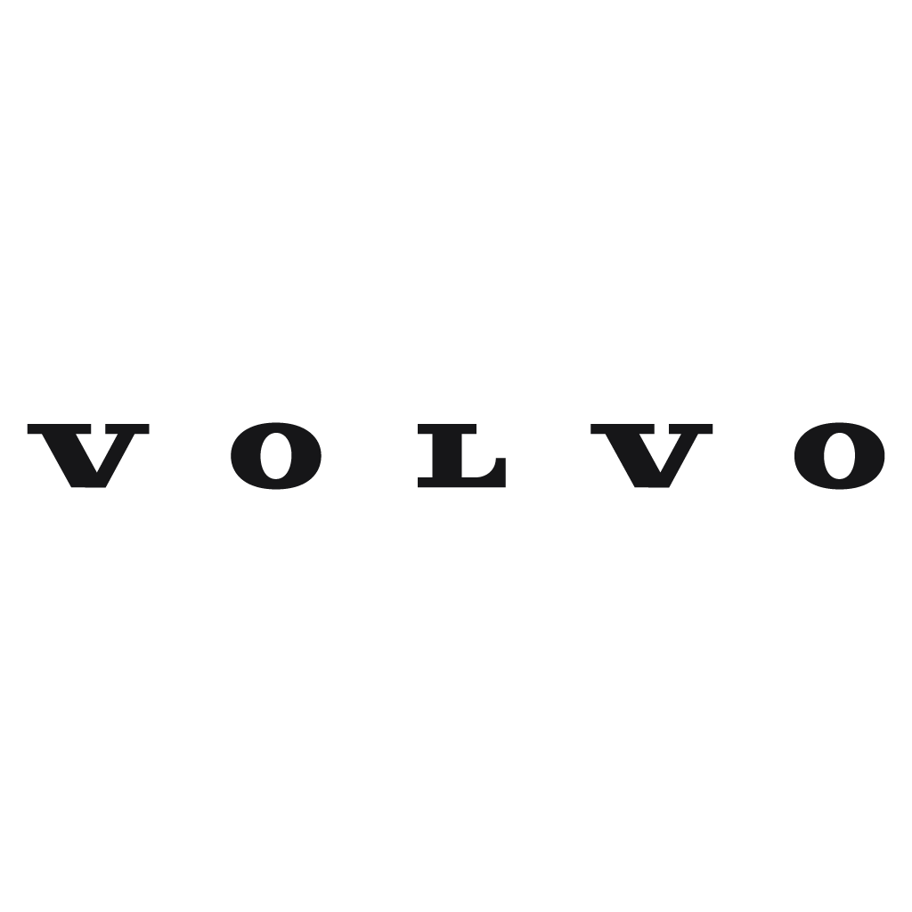

Senior UX Designer with 8 years of experience tackling complex challenges across large-scale digital products. My strength is figuring out what a problem actually needs. I break complexity into smaller questions, choose the right research approach for each challenge, and move quickly from insight to design. I believe the best solutions emerge when different perspectives come together – across design, product, engineering and increasingly, AI.

Research · UI design Explore 2 case studies ↗ Product design · Experimentation Explore 4 case studies ↗